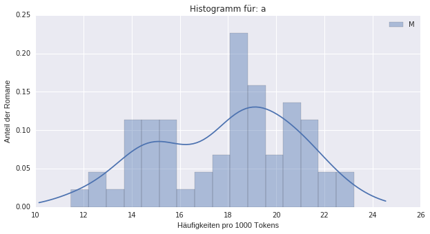

<!doctype html>
<html lang="en">
<head>
<meta charset="utf-8">
<!-- CUSTOMIZE THIS! -->
<title>Vergleich von Häufigkeiten</title>
<meta name="author" content="Christof Schöch">
<!-- END -->
<meta name="description" content="Slides">
<meta name="apple-mobile-web-app-capable" content="yes">
<meta name="apple-mobile-web-app-status-bar-style" content="black-translucent">
<meta name="viewport" content="width=device-width, initial-scale=1.0, maximum-scale=1.0, user-scalable=no, minimal-ui">
<link rel="stylesheet" href="css/reveal.css">
<link rel="stylesheet" href="css/theme/simple.css" id="theme">
<!-- Code syntax highlighting -->
<link rel="stylesheet" href="lib/css/zenburn.css">
<!-- Printing and PDF exports -->
<script>
var link = document.createElement( 'link' );
link.rel = 'stylesheet';
link.type = 'text/css';
link.href = window.location.search.match( /print-pdf/gi ) ? 'css/print/pdf.css' : 'css/print/paper.css';
document.getElementsByTagName( 'head' )[0].appendChild( link );
</script>
<!--[if lt IE 9]>
<script src="lib/js/html5shiv.js"></script>
<![endif]-->
</head>

<body>
<div class="reveal">
<!-- THIS IS WHERE THE CONTENT GOES! -->
<!-- Any section element inside of this container is displayed as a slide -->
<div class="slides">

<section data-markdown>
<script type="text/template">
# Vergleich von Häufigkeiten
<hr/>
<br/>
<br/>
<hr/>
<p>Christof Schöch<br/>(CLiGS, Universität Würzburg)</p>
<p></img>&nbsp;&nbsp;&nbsp;&nbsp;&nbsp;&nbsp;</img>&nbsp;&nbsp;&nbsp;&nbsp;&nbsp;&nbsp;</img></p>
</script>
</section>

<section data-markdown>
<script type="text/template">
## Hintergrund
* Vortrag "Spitzer über Racine, revisited" <!-- .element: class="fragment" data-fragment-index="1" -->
* Dort: Häufigkeit stilistischer Muster bei Racine und seinen Zeitgenossen <!-- .element: class="fragment" data-fragment-index="2" -->
* Hier: Vergleich der Häufigkeiten von Wörtern in den Romanen weiblicher und männlicher englischer Autoren <!-- .element: class="fragment" data-fragment-index="3" -->
* Teil eines Kurses: "Kontrastive Stilanalyse für LiteraturwissenschaftlerInnen" <!-- .element: class="fragment" data-fragment-index="4" -->
</script>
</section>


</section>
<section>

<section data-markdown>
<script type="text/template">
## Was wird vorausgesetzt?
1. Sie haben Vermutungen, was die sprachliche Geschlechterdifferenzierung angeht <!-- .element: class="fragment" data-fragment-index="1" -->
2. Sie wissen, was relative Worthäufigkeiten sind <!-- .element: class="fragment" data-fragment-index="2" -->
3. Sie wissen, was Mittelwert, Median und Standardabweichung (?) sind <!-- .element: class="fragment" data-fragment-index="3" -->
4. Sie wissen, wie man einen Boxplot oder ein Histogramm liest (?) <!-- .element: class="fragment" data-fragment-index="4" -->
5. Sie haben im Studium bereits Kontakt mit einer Programmiersprache gehabt <!-- .element: class="fragment" data-fragment-index="5" -->
</script>
</section>

<section data-markdown>
<script type="text/template">
## Kennzahlen einer Verteilung
* Mittelwert: Maß der zentralen Tendenz (Summe der Werte / Anzahl der Werte) <!-- .element: class="fragment" data-fragment-index="1" -->
* Median: Maß der zentralen Tendenz (mittlerer Wert in der geordneten Reihe der Werte) <!-- .element: class="fragment" data-fragment-index="2" -->
* Standardabweichung: Maß für die Streuung der Werte (Wurzel der Summe der quadrierten Abweichungen vom Mittelwert) <!-- .element: class="fragment" data-fragment-index="3" -->
* Alle drei: Maße, die eine Verteilung zusammenfassen <!-- .element: class="fragment" data-fragment-index="4" -->
</script>
</section>

<section data-markdown>
<script type="text/template">
## Beispiel Boxplot
<p></img>
<p>(Achsen, Median, Inter-Quartile-Range)</p>
</script>
</section>

<section data-markdown>
<script type="text/template">
## Beispiel Histogramm
<p></img>
<p>(Achsen, Bins, Dichteschätzung)</p>
</script>
</section>

<section data-markdown>
<script type="text/template">
## Einführung in Python
<p></img>
</script>
</section>


</section>
<section>


<section data-markdown>
<script type="text/template">
## Ziele der Lerneinheit
1. Prüfen, inwiefern sich männliche und weibliche Romanautoren des 19. Jhdts in ihrem Sprachgebrauch unterscheiden <!-- .element: class="fragment" data-fragment-index="1" -->
2. Verständnis, dass Häufigkeiten einer Wortform in einer Textsammlung als Verteilung verstanden werden können. <!-- .element: class="fragment" data-fragment-index="2" -->
3. Verstehen, welche Möglichkeiten dies eröffnet: Visualisierung, Kennwerte, statistische Tests. <!-- .element: class="fragment" data-fragment-index="3" -->
4. Zusammenhang: Bedeutung eines Wortes, Visualisierung, statistische Kennwerte <!-- .element: class="fragment" data-fragment-index="4" -->
</script>
</section>


<section data-markdown>
<script type="text/template">
## Textsammlung
* 70 englische Romane (je 35 von weiblichen und männlichen Autoren)
* Unter anderem: Jane Austen, Charlotte Bronte, Charles Dickens, Anthony Trollope
* Romane aus dem 19. Jahrhundert (etwa 1830-1900)
* lange Romane wurden aufgeteilt, sodass 120 Dokumente vorliegen
* Umfang: 8,0 + 8,7 = 16,7 Millionen Tokens
<p align="center"></img></p>
</script>
</section>

<section data-markdown>
<script type="text/template">
## Jupyter Notebooks für Python
* Textfelder und Code-Felder <!-- .element: class="fragment" data-fragment-index="1" -->
* Code-Felder sind interaktiv (Code kann ausgeführt werden) <!-- .element: class="fragment" data-fragment-index="2" -->
* Ausführen: Strg+Enter <!-- .element: class="fragment" data-fragment-index="3" -->
* Zellen bauen aufeinander auf <!-- .element: class="fragment" data-fragment-index="4" -->
* Mehrere hintereinander ausführen: "Cell", dann auf "Run All Below".  <!-- .element: class="fragment" data-fragment-index="5" -->
* Neu anfangen: Menü Cell, All Output, Clear <!-- .element: class="fragment" data-fragment-index="6" -->
</script>
</section>

<section data-markdown>
<script type="text/template">
## Jupyter Notebook
* URL: http://mybinder.org/repo/christofs/jupyter/
</script>
</section>


</section>
<section>

<section data-markdown>
<script type="text/template">
## Arbeitsfragen / Diskussion
* Welche Wörter haben Sie getestet?
* Welche Resultate ergaben sich?
* Wie interpretieren Sie die Resultate?
* Welche methodischen Fragen ergeben sich?
* Was haben Sie gelernt?
* Was hat Ihnen nicht eingeleuchtet? 
</script>
</section>

<section data-markdown>
<script type="text/template">
## Die nächsten Sitzungen
* Was passiert, wenn wir die Texte per Zufall in zwei Gruppen aufteilen? `random.shuffle(AlleRomane)` <!-- .element: class="fragment" data-fragment-index="1" -->
* Was passiert, wenn wir eine weitere Textsammlung aus dem 20. Jahrhundert testen? <!-- .element: class="fragment" data-fragment-index="2" -->
* Auf welchen Grundlagen entscheidet man, welcher statistische Test korrekt ist? <!-- .element: class="fragment" data-fragment-index="3" -->
* Wie funktioniert der Wilcoxon rank sum Test genau? <!-- .element: class="fragment" data-fragment-index="4" -->
</script>
</section>


<!-- DON'T TOUCH UNLESS YOU KNOW WHAT YOU'RE DOING :-) -->
</div>
<script src="lib/js/head.min.js"></script>
<script src="js/reveal.js"></script>
<script>
// Full list of configuration options available at:
// https://github.com/hakimel/reveal.js#configuration
Reveal.initialize({
    controls: true,
    progress: true,
    history: true,
    center: true,
    transition: 'slide', // none/fade/slide/convex/concave/zoom
    // Optional reveal.js plugins
    dependencies: [
        { src: 'lib/js/classList.js', condition: function() { return !document.body.classList; } },
        { src: 'plugin/markdown/marked.js', condition: function() { return !!document.querySelector( '[data-markdown]' ); } },
        { src: 'plugin/markdown/markdown.js', condition: function() { return !!document.querySelector( '[data-markdown]' ); } },
        { src: 'plugin/highlight/highlight.js', async: true, callback: function() { hljs.initHighlightingOnLoad(); } },
        { src: 'plugin/zoom-js/zoom.js', async: true },
        { src: 'plugin/notes/notes.js', async: true }
        ]
    });
</script>
</body>
</html>
